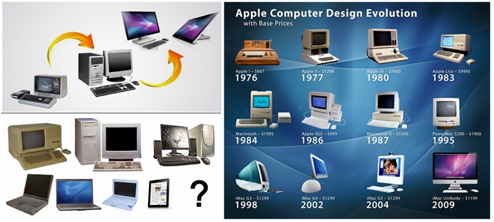
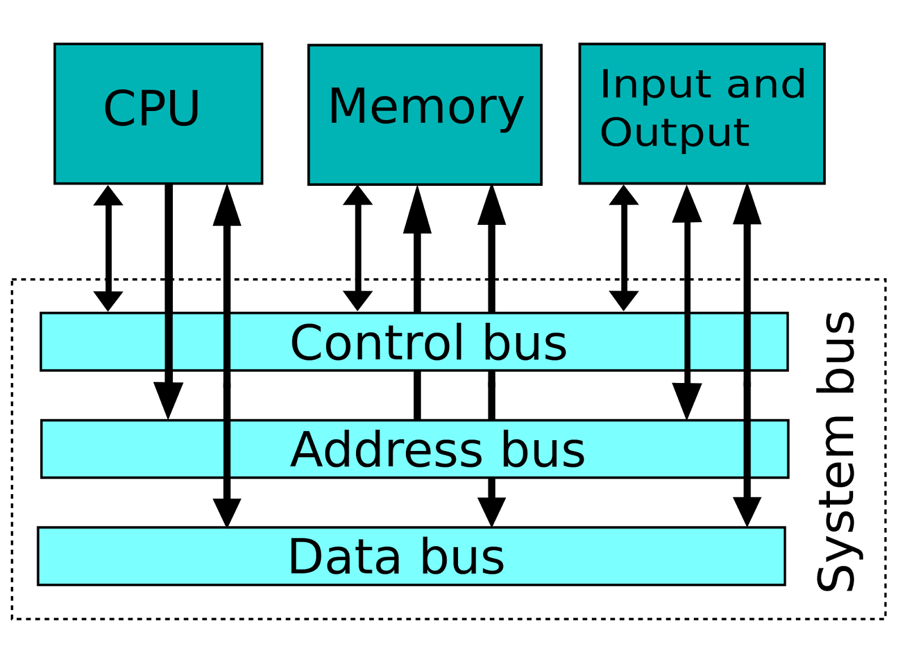

Perkembangan Arsitektur Komputer

Sejarah Arsitektur Komputer
Sejarah arsitektur komputer merujuk pada perkembangan dan evolusi struktur dasar sistem komputer dari masa ke masa.
- Zaman Pra-Modern (Abad ke-19 dan Awal Abad ke-20): Pada awalnya, komputer adalah manusia yang melakukan perhitungan secara manual. Namun, pada abad ke-19 dan awal abad ke-20, perkembangan mesin-mesin mekanis seperti mesin hitung Charles Babbage dan mesin kode-kursi Herman Hollerith menjadi landasan untuk komputer modern.
- Mesin Von Neumann (1940-an): Arsitektur komputer modern pertama kali didefinisikan oleh John von Neumann pada tahun 1945 dalam konsep mesin komputasi elektronik yang terdiri dari unit pemrosesan, unit kontrol, unit memori, dan unit input/output. Ini menjadi landasan untuk pembangunan komputer pertama, termasuk ENIAC dan EDVAC.
- Era Mainframe (1950-an - 1960-an): omputer mainframe menjadi dominan dalam era ini. Mereka besar, mahal, dan digunakan terutama oleh perusahaan dan lembaga pemerintah untuk pemrosesan data besar dan aplikasi ilmiah.
- Masa Transisi ke Mikrokomputer (1970-an): Perkembangan mikroprosesor membuka jalan bagi komputer personal (PC) yang lebih kecil, lebih terjangkau, dan lebih mudah diakses oleh masyarakat umum. Mikrokomputer seperti Altair 8800 dan Apple II memulai revolusi komputer pribadi.
- Era Mikroprosesor (1980-an - sekarang): Komputer pribadi semakin populer dengan munculnya IBM PC pada tahun 1981. Perkembangan mikroprosesor yang lebih cepat dan lebih kuat memungkinkan peningkatan kinerja dan kemampuan komputer dalam skala yang besar.
- Internet dan Komputasi Terdistribusi (1990-an - sekarang): Perkembangan Internet membawa perubahan mendasar dalam cara kita berinteraksi dengan komputer dan cara komputer berinteraksi satu sama lain. Komputasi terdistribusi dan teknologi awan (cloud computing) menjadi tren utama dalam penyediaan sumber daya komputasi.
- Perkembangan Arsitektur Paralel dan Multicore (2000-an - sekarang): Untuk mengatasi batasan kinerja yang dihadapi oleh mikroprosesor tunggal, arsitektur komputer beralih ke sistem paralel dan multicore. Ini memungkinkan untuk eksekusi tugas secara paralel dan meningkatkan kinerja secara signifikan.
- Internet of Things (IoT) dan Komputasi Edge (2010-an - sekarang):Pertumbuhan Internet of Things (IoT) telah membawa tentang kebutuhan akan komputasi yang lebih terdistribusi dan terlokalisasi. Komputasi edge, di mana pemrosesan data dilakukan lebih dekat dengan sumber data, menjadi semakin penting. Sejarah arsitektur komputer mencerminkan perkembangan teknologi komputer dari konsep dasar mesin hitung hingga komputer canggih yang kita gunakan hari ini. Perubahan dalam arsitektur komputer sering kali dipicu oleh kemajuan dalam teknologi semikonduktor, kebutuhan aplikasi yang berkembang, dan kemajuan dalam pemahaman teoritis tentang komputasi.

Generasi Arsitektur Komputer
- Pendahuluan: Sebelum era komputer modern, manusia telah menggunakan berbagai perangkat mekanis dan elektromekanis untuk melakukan perhitungan, seperti abakus, mesin hitung Pascal, dan mesin analitik Charles Babbage, yang merupakan pendahulu langsung komputer modern.
- Generasi Pertama (1940-an):
- Komputer pertama, seperti ENIAC (Electronic Numerical Integrator and Computer) dan Colossus, muncul pada awal tahun 1940-an. Mereka menggunakan tabung hampa udara sebagai elemen utama.
- Pada periode ini, konsep arsitektur Von Neumann diusulkan, yang mengintegrasikan unit pemrosesan, unit kontrol, memori, dan input/output (I/O) dalam satu sistem yang terintegrasi.
- Generasi Kedua (1950-an - 1960-an):
- Penemuan transistor pada tahun 1947 membuka jalan bagi komputer generasi kedua, yang menggunakan transistor untuk menggantikan tabung hampa udara. Contoh utamanya adalah IBM 360.
- Bahasa pemrograman tingkat tinggi seperti Fortran dan COBOL mulai muncul, mempermudah pengembangan perangkat lunak.
- Generasi Ketiga (1960-an - 1970-an):
- Kemajuan dalam teknologi sirkuit terpadu (IC) memungkinkan integrasi lebih banyak fungsi dalam satu chip, menghasilkan komputer generasi ketiga.
- Komputer minikomputer, seperti PDP-11 dari DEC, menjadi populer di kalangan universitas dan bisnis kecil karena harganya yang lebih terjangkau.
- Generasi Keempat (1970-an - 1980-an):
- Tahun 1971, penemuan mikroprosesor oleh Intel mengubah industri komputer, memungkinkan integrasi semua fungsi komputer ke dalam satu chip kecil.
- Munculnya komputer pribadi (PC) seperti Apple II (1977) dan IBM PC (1981) membawa komputer ke rumah dan kantor.
- Generasi Kelima (1990-an - Sekarang):
- Era Internet dimulai pada awal 1990-an, yarng mempengaruhi arsitektur komputer untuk mendukung konektivitas global dan komputasi terdistribusi.
- Komputer pribadi semakin populer dengan munculnya sistem operasi seperti Microsoft Windows dan distribusi Linux. Munculnya Windows 95 menjadi titik balik dalam antarmuka pengguna dan pemakaian komputer.
- Perkembangan arsitektur paralel dan komputasi multi-core dimulai untuk meningkatkan kinerja komputer.
- Era Modern (Sekarang):
- Komputasi awan dan Internet of Things (IoT) telah mempengaruhi desain arsitektur komputer untuk mendukung ketersediaan data yang lebih besar dan konektivitas yang lebih baik.
- Teknologi kecerdasan buatan (AI) dan komputasi kuantum telah mengubah paradigma dalam arsitektur komputer, memungkinkan komputer untuk melakukan tugas-tugas yang sebelumnya dianggap tidak mungkin.
- Perkembangan teknologi semikonduktor dan inovasi dalam desain komputer terus mendorong batasan kinerja komputer, memperluas cakupan aplikasi dan kemungkinan di masa depan. Sejarah arsitektur komputer mencerminkan perjalanan panjang dalam evolusi teknologi, dari perangkat mekanis sederhana hingga sistem terhubung secara global yang mampu melakukan perhitungan kompleks dalam hitungan detik. Dengan terus berkembangnya teknologi, arsitektur komputer akan terus berubah untuk memenuhi tuntutan masa depan dalam komputasi dan teknologi informasi.

Jenis Arsitektur Komputer.
- Arsitektur komputer adalah struktur dasar dari sebuah sistem komputer, yang mencakup elemen-elemen seperti arsitektur instruksi, organisasi memori, sistem interkoneksi, dan lain-lain. Jenis-jenis arsitektur komputer mencakup:
- Von Neumann: Arsitektur ini merupakan model dasar yang banyak digunakan dalam pembangunan komputer modern. Dibuat berdasarkan gagasan John von Neumann pada tahun 1945, arsitektur ini memiliki unit pemrosesan, unit kontrol, unit memori, dan unit input/output terpisah. Instruksi dan data disimpan dalam memori yang sama dan diakses melalui alamat.
- Harvard: Arsitektur Harvard memisahkan memori instruksi dan data. Dalam sistem ini, terdapat dua jalur memori terpisah, satu untuk instruksi dan satu lagi untuk data. Ini memungkinkan komputer untuk membaca instruksi dan data secara bersamaan, yang dapat meningkatkan kinerja.
- RISC (Reduced Instruction Set Computer): Arsitektur RISC didesain dengan sedikit instruksi yang lebih sederhana dan lebih cepat dieksekusi. Setiap instruksi biasanya dieksekusi dalam satu siklus clock. Ini memungkinkan kinerja yang lebih tinggi dalam beberapa kasus, meskipun memerlukan kode yang lebih panjang.
- CISC (Complex Instruction Set Computer): Arsitektur CISC memiliki instruksi yang lebih kompleks yang dapat melakukan lebih banyak tugas dalam satu instruksi. Ini sering kali memerlukan waktu eksekusi yang lebih lama, tetapi kode yang lebih pendek. Contoh arsitektur CISC termasuk x86, yang banyak digunakan dalam prosesor Intel dan AMD.
- Pipelined: Pipelining adalah teknik yang digunakan dalam banyak arsitektur modern di mana beberapa instruksi dieksekusi secara bersamaan dalam berbagai tahap yang berurutan. Ini meningkatkan throughput dan kinerja keseluruhan komputer.
- Superscalar: Arsitektur superscalar memungkinkan lebih dari satu instruksi untuk dieksekusi dalam satu siklus clock. Ini dicapai dengan menggunakan beberapa unit eksekusi yang bekerja secara paralel.
- VLIW (Very Long Instruction Word): Arsitektur VLIW memiliki instruksi yang sangat panjang, di mana beberapa operasi dieksekusi bersamaan dalam satu siklus clock. Compiler bertanggung jawab untuk mengoptimalkan instruksi-instruksi ini.
- SIMD (Single Instruction, Multiple Data): Arsitektur SIMD memungkinkan satu instruksi untuk mengoperasikan beberapa data secara bersamaan. Ini sangat efisien untuk aplikasi yang memerlukan operasi seragam pada kumpulan data yang besar, seperti grafika komputer atau pemrosesan sinyal.
- Multicore dan Manycore: Dalam arsitektur ini, CPU memiliki lebih dari satu inti pemrosesan. Pada arsitektur multicore, terdapat beberapa inti pemrosesan di dalam satu chip, sedangkan manycore memiliki jumlah inti yang lebih besar. Ini memungkinkan untuk eksekusi tugas secara paralel dan meningkatkan kinerja sistem secara keseluruhan.
- Memori Bersama (Shared Memory) dan Memori Terdistribusi (Distributed Memory): Arsitektur dengan memori bersama memungkinkan beberapa pemrosesor untuk mengakses memori yang sama secara langsung, sementara arsitektur dengan memori terdistribusi memiliki memori lokal di setiap pemrosesor dan berkomunikasi melalui jaringan.
- Client-Server: Arsitektur client-server terdiri dari dua jenis entitas: klien yang meminta layanan atau sumber daya, dan server yang menyediakan layanan atau sumber daya tersebut. Klien dan server dapat berada pada mesin yang berbeda dan berkomunikasi melalui jaringan.
- Cluster dan Grid: Arsitektur cluster dan grid melibatkan penggabungan beberapa komputer fisik menjadi satu entitas yang lebih besar. Cluster biasanya terdiri dari beberapa komputer yang terhubung dalam jaringan lokal, sedangkan grid melibatkan komputer yang tersebar geografis yang terhubung melalui jaringan.
- Sistem Terdistribusi: Arsitektur sistem terdistribusi terdiri dari sejumlah besar komputer yang terhubung dalam jaringan dan bekerja bersama untuk menyelesaikan tugas. Setiap komputer dalam sistem tersebut memiliki otonomi dan dapat berkomunikasi dengan yang lain.
- Sistem Paralel: Arsitektur sistem paralel memungkinkan beberapa prosesor untuk bekerja secara bersamaan untuk menyelesaikan tugas. Ini dapat mencakup sistem multiprosesor simetris (SMP), di mana semua prosesor memiliki akses yang sama ke memori dan sumber daya sistem, serta arsitektur NUMA (Non-Uniform Memory Access), di mana akses ke memori dapat bervariasi tergantung pada lokasi prosesor. Pemilihan arsitektur komputer yang tepat tergantung pada sejumlah faktor, termasuk kebutuhan aplikasi, ketersediaan sumber daya, dan keterbatasan desain. Dengan memahami berbagai jenis arsitektur komputer, para insinyur dapat merancang sistem yang efisien dan sesuai dengan kebutuhan spesifik.